Apa itu JavaScript ?
JavaScript adalah bahasa pemrograman tingkat tinggi yang pada awalnya dikembangkan untuk membuat website menjadi lebih “hidup”. Bersama dengan HTML dan CSS, JavaScript menjadi bahasa pemrograman paling populer untuk mengembangkan aplikasi berbasis web. Bahasa ini mampu memberikan logic ke dalam website, sehingga website tersebut memiliki fungsionalitas tambahan dan lebih interaktif.
VARIABEL
JavaScript membagi instruksi secara umum menjadi dua jenis, yaitu expression dan statement. statement adalah instruksi untuk melakukan sebuah aksi tertentu. termasuk membuat variabel, melakukan perulangan, pengecekan kondisi, dll. Expression adalah unit kode yang dapat dievaluasi menjadi suatu nilai. Variable dibagi 2 : let (bisa diubah) const (tdk bsa diubah)

TIPE DATA
Pada materi sebelumnya kita telah belajar tentang variabel untuk menyimpan nilai. Nilai yang kita tetapkan pada variabel pasti memiliki tipe data. Tipe data merupakan pengklasifikasian data berdasarkan jenisnya. Pada JavaScript terdapat beberapa tipe data sebagai berikut:
Undifined
Tipe data ini terbentuk ketika sebuah variabel tidak memiliki nilai. Artinya, ketika kita mendeklarasikan variabel tanpa menginisialisasikan nilainya, variabel tersebut menjadi undefined. contoh:
let x;
console.log(typeof(x));
output: undefined
Number
Nilai dari tipe data number adalah angka. Variabel bertipe data number dituliskan seperti angka pada umumnya. Pada tipe data number, kita juga dapat melakukan perhitungan aritmatika seperti penjumlahan, pengurangan, perkalian, dsb. Pada operator aritmatika juga terdapat operator increment (++) dan decrement (--). Operator increment dan decrement digunakan untuk menambahkan atau mengurangi nilai 1 pada nilai variabel yang ada sekarang.
BigInt
Pada JavaScript, tipe data “Number” hanya mencakup nilai dari -(253 - 1) hingga (253 - 1). Untuk kebutuhan umum, sebenarnya nilai tersebut sudah sangat cukup. Namun, akan ada kebutuhan tertentu di mana kita membutuhkan cakupan nilai yang lebih besar, seperti untuk kriptografi atau menentukan waktu hingga presisi microsecond. Untuk nilai di luar Number, kita bisa menggunakan tipe BigInt. Untuk membedakan tipe BigInt dan Number, tambahkan karakter n di akhir angka.
String
Tipe data selanjutnya adalah string yang merupakan sebuah teks. Untuk menetapkan nilai sebagai string pada variabel gunakan tanda petik satu (‘) atau petik dua (“) di antara teksnya.
Boolean
Boolean hanya memiliki dua nilai, yaitu true atau false. Tipe data ini menjadi kunci utama dalam penentuan logika. Kita akan banyak menggunakannya nanti dalam materi if/else statement. Untuk menetapkan nilai boolean pada variabel, gunakan keyword true atau false
Null
Tipe berikutnya adalah null. Serupa dengan undefined, namun null perlu diinisialisasikan pada variabel. Null biasa digunakan sebagai nilai sementara pada variabel, tapi sebenarnya nilai tersebut “tidak ada”. Terkadang kita perlu membuat sebuah variabel, namun kita belum memerlukan nilai apa-apa dan tidak ingin terikat oleh tipe data apa pun. Nah, daripada kita tidak menetapkan nilai apa pun (variabel akan undefined) sebaiknya kita beri nilai null pada variabel tersebut dan ubah nanti ketika kita membutuhkannya.
Symbol
Symbol adalah tipe data baru yang dikenalkan pada ES6. Tipe data Symbol digunakan untuk menunjukkan identifier yang unik. Ketika membuat Symbol, kita bisa memberikan deskripsi atau nama symbol seperti ini const id = Symbol("id");
OPERATOR
Operator dalam bahasa pemrograman sendiri adalah simbol yang memberi tahu interpreter untuk melakukan operasi seperti matematika, relasional, atau logika untuk memberikan hasil tertentu.
Assignment Operator
Dari contoh kode yang kita gunakan sebelumnya, sebenarnya kita sudah menggunakan assignment operator. Operator ini digunakan untuk memberikan nilai pada variabel. Pada dasarnya operator ini adalah tanda sama dengan (=), di mana tanda ini digunakan untuk menginisialisasi nilai pada variabel. Tempatkan variabel yang ingin diberi nilai di sebelah kiri, sementara nilainya di sebelah kanan. Di antara keduanya terdapat operator assignment.
Comparisson operator
Terdapat serangkaian karakter khusus yang disebut dengan operator pembanding/komparasi yang dapat mengevaluasi dan membandingkan dua nilai. Berikut daftar operator dan fungsinya:
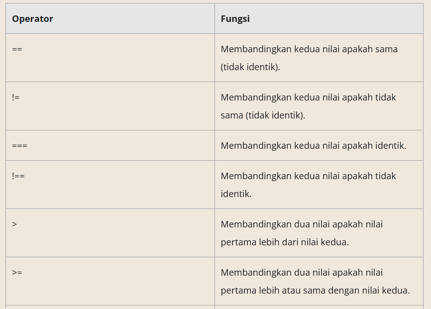PERBANDINGAN
Setiap hari kita melakukan perhitungan dan perbandingan guna membuat keputusan, apa pun itu. Contohnya, apakah perlu mencuci kendaraan ketika cuaca sedang cerah? Apa saja transportasi online yang bisa dipesan ketika hujan untuk sampai di tempat tujuan. dll
IF/ELSE Statement
Statement IF akan menguji suatu kondisi. Jika kondisi bernilai true, maka blok kode di dalamnya akan dijalankan. Sebaliknya, jika bernilai false, maka blok kode Else yg akan dijalankan.
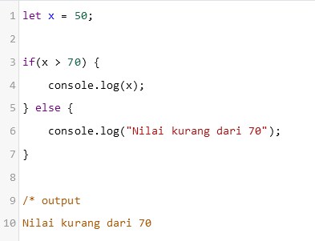SWITCH CASE STATEMENT
Sebelumnya kita telah mempelajari bagaimana percabangan logika menggunakan if statement. Selain if, JavaScript juga mendukung switch statement untuk melakukan pengecekan banyak kondisi dengan lebih mudah dan ringkas.
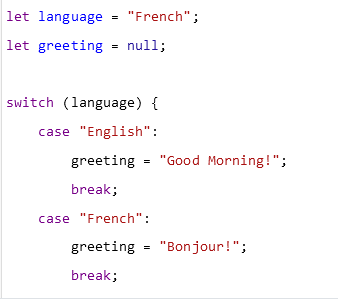Tanda kurung setelah keyword switch berisi variabel atau expression yang akan dievaluasi. Kemudian untuk setiap kondisi yang mungkin terjadi, kita masukkan keyword case diikuti dengan nilai yang valid. Jika kondisi pada case sama dengan variabel pada switch, maka blok kode setelah titik dua (:) akan dijalankan. Keyword break digunakan untuk keluar dari proses switch. Terdapat satu case bernama default yang memiliki fungsi yang sama dengan keyword else pada control flow if-else. Jika tidak ada nilai yang sama dengan variabel pada switch, maka blok kode ini akan dijalankan.
PERULANGAN
Ketika menulis program komputer, akan ada situasi di mana kita perlu melakukan hal yang sama berkali-kali. Misalnya kita ingin menampilkan semua nama pengguna yang terdaftar di aplikasi atau sesederhana menampilkan angka 1 sampai 10. Tentunya kita membutuhkan looping/perulangan.
For
Dari beberapa cara melakukan proses loop pada JavaScript, “for” merupakan salah satu cara yang banyak digunakan. Struktur dasar dari for tampak seperti berikut:
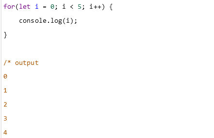For Of
Cara lain dalam melakukan looping adalah menggunakan for..of. For of mulai hadir pada ECMAScript 2015 (ES6). Cara ini jauh lebih sederhana dan modern dibanding for loop biasa. Sintaks dasar dari for of loop adalah seperti ini:
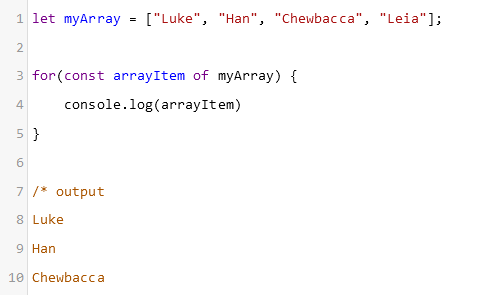While Do-while
Metode lain untuk melakukan looping adalah dengan statement while. Sama seperti for, instruksi while mengevaluasi ekspresi boolean dan menjalankan kode di dalam blok while ketika bernilai true.
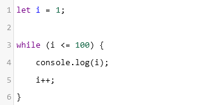Structur Data
Sebelumnya kita sempat mempelajari tentang variabel dan tipe data yang ada di JavaScript. Tipe data yang kita bahas sebelumnya termasuk dalam kategori tipe data primitif yang hanya bisa menyimpan satu nilai. Pada modul ini kita akan membahas tentang tipe data JavaScript yang dapat menyimpan struktur data yang lebih kompleks.
OBJECT
Kali ini kita akan berkenalan dengan tipe data object. Sebuah tipe data yang sangat berguna dalam pengembangan aplikasi dengan JavaScript. Object mampu menyimpan nilai dari beragam tipe data dan membentuk data yang lebih kompleks. Object berisi pasangan key dan value yang juga dikenal dengan property. Key berperan mirip seperti nama variabel yang menyimpan sebuah nilai. Sementara, value berisi nilai dengan tipe data apa pun termasuk objek lain.
Key harus berupa string dan dituliskan sebelum titik dua (:), lalu diikuti dengan value-nya. Meskipun key merupakan string, kita tidak perlu menuliskan tanda petik kecuali ada karakter khusus seperti spasi.

Setelah mempelajari bagaimana membuat object dan menampilkan property di dalamnya, selanjutnya kita akan memodifikasi sebuah object. Untuk mengubah nilai properti di dalam object kita gunakan assignment operator (=).
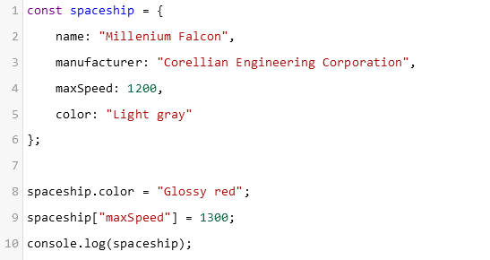ARRAY
Array merupakan tipe data yang dapat mengelompokkan lebih dari satu nilai dan menempatkannya dalam satu variabel. Perbedaan array dengan object adalah data pada array disusun secara berurutan dan diakses menggunakan index. Untuk mengakses nilai di dalam array, kita gunakan tanda kurung siku [] yang di dalamnya berisi angka yang merupakan posisi nilai yang ingin diakses.
Lalu, apa yang akan terjadi jika kita berusaha mengakses index di luar ukuran array-nya? Jika kita mengakses nilai array lebih dari index-nya, maka hasilnya akan undefined. Index terakhir array selalu jumlah nilai array - 1.
Sejauh ini kita baru belajar menginisialisasi dan mengakses elemen dari sebuah array. Pastinya Anda bertanya, “Bagaimana kita memanipulasi data pada array tersebut?” Nah, untuk menambahkan data ke dalam array, kita bisa menggunakan metode push(). Fungsi push ini akan menambahkan data di akhir array.
Sedangkan untuk mengeluarkan data atau elemen terakhir dari array, kita bisa gunakan metode pop(). Metode lain yang bisa kita gunakan untuk memanipulasi data pada array adalah shift() dan unshift(). Metode shift() digunakan untuk mengeluarkan elemen pertama dari array, sementara unshift() digunakan untuk menambahkan elemen di awal array.
Lalu bagaimana jika kita ingin menghapus data dari array? Sama seperti object, kita bisa menggunakan keyword delete.
MAP
Map adalah tipe data yang menyimpan koleksi data dengan format key-value layaknya Object. Yang membedakan adalah Map memperbolehkan key dengan tipe data apa pun, dibandingkan Object yang hanya mengizinkan key bertipe String atau Symbol.
Untuk mendefinisikan Map gunakan constructor seperti di bawah ini:
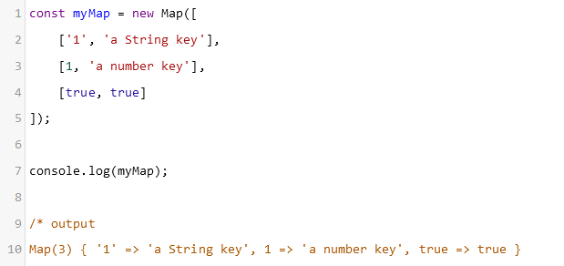Array pertama (yang berada di luar) berfungsi untuk menyimpan masing-masing elemen atau pasangan key-value dari Map. Kemudian array di dalamnya, memiliki dua elemen, di mana elemen pertama adalah key dan elemen keduanya merupakan value. Ketika sudah membuat objek Map, kita bisa mendapatkan nilainya berdasarkan key tertentu dengan metode get(). Lalu, untuk menambahkan pasangan key-value baru gunakan metode set().
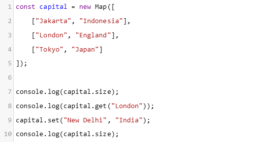SET
Struktur data yang akan kita bahas berikutnya adalah Set. Set sederhananya merupakan kumpulan nilai (set of values). Hal yang membedakan Set dengan struktur data yang lain adalah data pada Set tidak berurutan dan juga tidak diindeks. Selain itu, data di dalam Set juga bersifat unik dan tidak ada duplikasi. Perhatikan contoh deklarasi Set di bawah ini
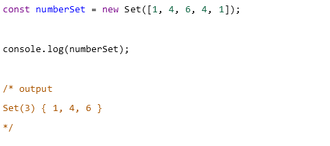Pada kode di atas terdapat beberapa angka yang duplikat, yaitu angka 1 dan 4. Secara otomatis Set akan membuang angka yang sama, sehingga nilai yang tersimpan adalah {1, 4, 6}. Untuk menambahkan data ke dalam Set kita bisa memanfaatkan fungsi add()
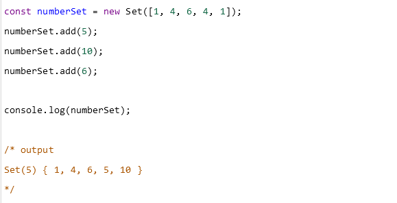RANGKUMAN MATERI
Pada modul ini kita telah mempelajari logika dan sintaksis dasar JavaScript sebelum membuat aplikasi yang lebih kompleks ke depannya.
Beberapa hal yang telah kita bahas pada modul ini, antara lain:
Gunakan comments untuk memberitahu interpreter supaya mengabaikan kode atau teks yang kita tulis. Ini akan berguna untuk membuat dokumentasi atau penjelasan atas kode yang kita tulis.
Kita dapat menyimpan suatu nilai ke dalam variabel. ES6 mengenalkan dua cara baru untuk mendefinisikan variabel, yaitu let dan const. Gunakan const untuk menyimpan nilai yang tidak akan berubah setelah diinisialisasi. Gunakan let apabila nilai di dalam variabel bisa berubah atau diinisialisasi ulang.
Terdapat tujuh (7) tipe data primitif yang mendefinisikan suatu nilai dalam JavaScript. Ketujuh nilai tersebut antara lain: Undefined, Number, BigInt, String, Boolean, Null, dan Symbol.
JavaScript memiliki beragam operator yang memberi tahu interpreter untuk melakukan operasi matematika, relasional, atau logika untuk memberikan hasil akhir.
Pengambilan keputusan adalah hal yang penting dalam pemrograman. Kita bisa memanfaatkan if-else statement atau switch-case untuk memilih satu opsi berdasarkan kondisi yang diberikan.
Pemrograman juga membantu kita untuk melakukan pekerjaan yang berulang. Dengan kode for atau while, kita bisa melakukan perulangan terhadap suatu kode sebanyak ratusan bahkan ribuan kali hanya dengan beberapa baris saja.